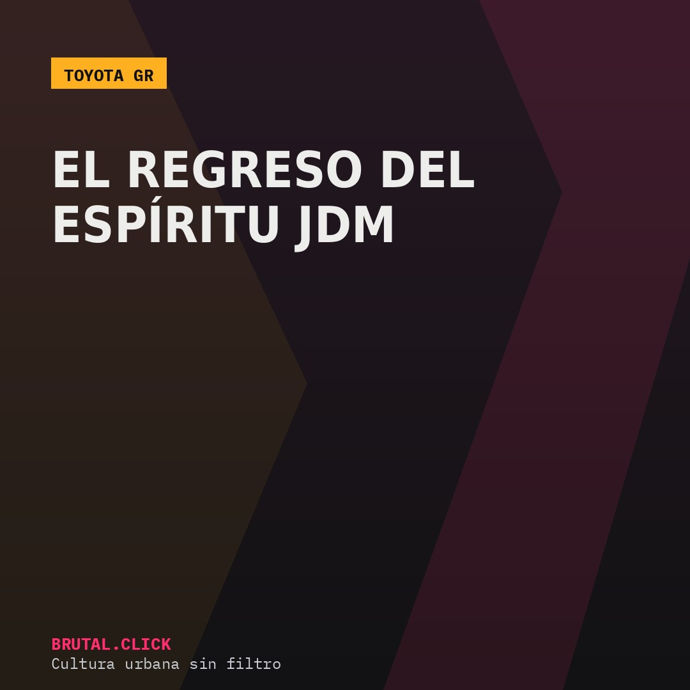
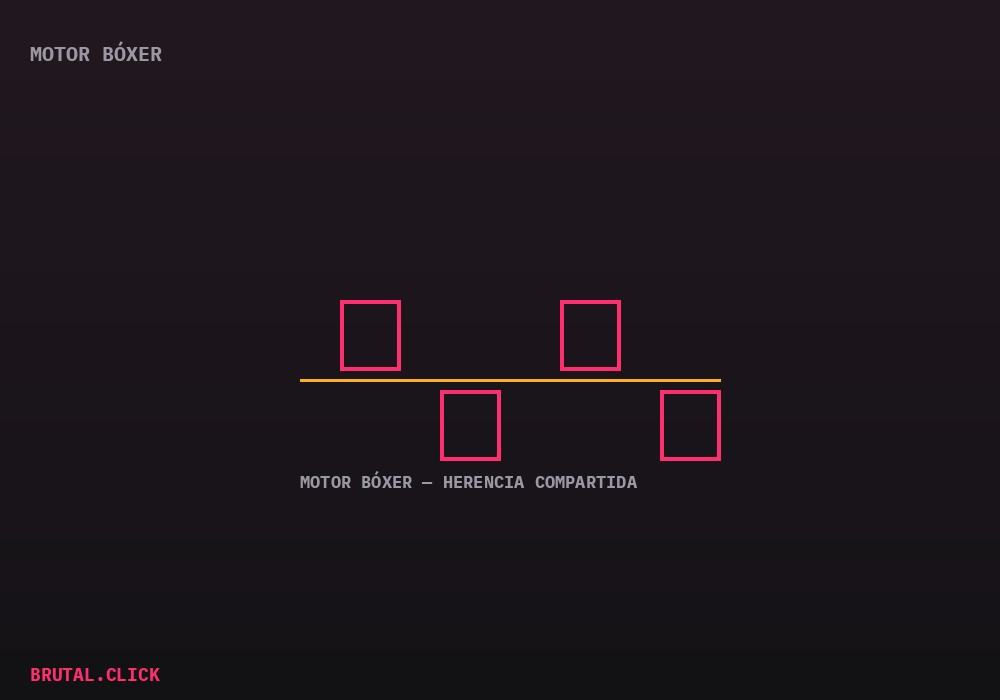

Este artículo incluye enlaces de afiliación a productos relacionados (modelos a escala, merchandising). No hay comisión posible por la venta de vehículos nuevos. Si compras a través de estos enlaces, podemos recibir una pequeña comisión sin coste extra para ti.

Toyota Gazoo Racing (GR) es la división que ha tenido la tarea, nada sencilla, de reconectar a la marca con la cultura del deportivo accesible que definió buena parte del imaginario JDM de los 80 y 90 — una época en la que Toyota vendía coches que hoy se pagan varias veces su precio original en el mercado de coleccionistas.
El AE86 como punto de partida cultural
El GR86 actual, desarrollado junto a Subaru, no es un simple ejercicio de marketing retro — es la continuación directa del espíritu del mítico AE86, un coche ligero, de tracción trasera y motor poco potente comparado con los estándares actuales, pero que se hizo legendario precisamente por lo bien que premiaba a quien sabía conducirlo.

Esa colaboración con Subaru es la razón por la que el GR86 monta un motor bóxer plano en vez de la configuración en línea más habitual en Toyota — una decisión que prioriza el centro de gravedad bajo sobre la simplicidad de producción, algo poco común en un coche de este precio.
El Supra y el regreso a los 90
El otro pilar de GR es el Supra, resucitado en 2019 tras casi dos décadas de ausencia, compartiendo plataforma con el BMW Z4. La generación A80 de los 90 —la que popularizó su aparición en la cultura del tuning legal en circuito— sigue siendo una referencia de precio disparado en el mercado de segunda mano, lo que explica en parte por qué Toyota decidió recuperar el nombre.
Modelo a escala Toyota Supra A80 1:18
El icono de los 90 en tu estanteríaModelo a escala Toyota GR86
El heredero directo del AE86Enlaces pendientes de activar el programa de afiliados.